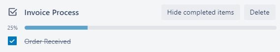

Update progress for yourself or other team members.
Checklists are a great way to visualize the components of a task and stay focused.
Progress is measured by the number of checklist items marked complete.
Click the Card.
Click the Square by a checklist item to mark it
complete.
Result:

Sometimes a checklist item may need to be expanded to its
own card. Follow the related task to convert it to a full card.